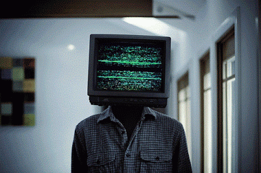

At last, LCD Soundsystem have released their first new album in seven years. American Dream is the long-awaited follow-up to 2010’s This Is Happening. The new record features “tonite,” which has a corresponding music video and VR experience. It also includes the singles “Call the Police” and “American Dream,” which were the first tastes of the new record earlier this year. Listen below. “and the record is out in ny now,” James Murphy wrote on Facebook. “i can take a shower and go to bed.” On Twitter, he added, “what a relief.”
Last night, LCD Soundsystem released a new non-album song for free download called “pulse (v. 1),” which Murphy later described as “a track to listen to after the LP.” The band is currently on a world tour, which wraps up in December with another residency at Brooklyn Steel—check out the full dates here.
| Albuns que gosto | ||
|---|---|---|
| Album | Artista | Ano |
| Escape from dragon house | Dengue fever | 2005 |
| La revencha del tango | Gothan Project | 2001 |
| Top 10 hits to the end of the world | Prince Rama | 2012 |
|  | ||